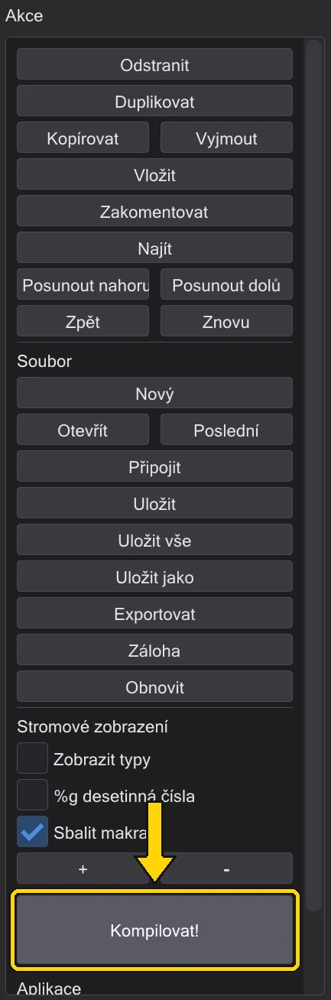
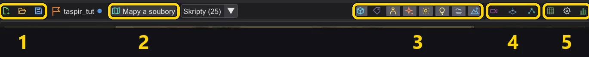
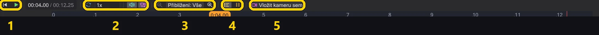
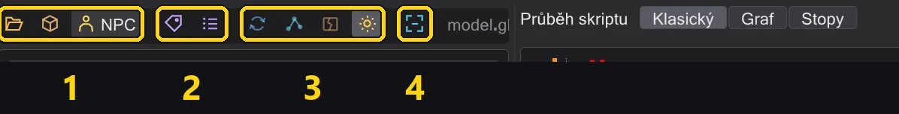

Každé tlačítko
Každé tlačítko programu - lišta režimů, sloupec akcí, lišta mapy, dlaždice pro umisťování, inspektor, kamera, časová osa a zobrazení modelu - s tím, co dělá.
Najeďte myší na libovolné tlačítko v programu a uvidíte stejné vysvětlení jako popisek. Tlačítka s barevným rámečkem jsou přepínače: zapnuto nebo vypnuto.
Lišta režimů#
Pruh úplně vlevo přepíná, co okno ukazuje. Skript zůstává v každém režimu stejný.
| Režim | Co ukazuje |
|---|---|
| Události | Seznam Události všech příkazů a maker, strom skriptu, sloupec akcí - pro psaní skriptů. Psaní skriptů |
| Mise | Mise: seznam entit a inspektor, mapa ve 3D s časovou osou pod ní - pro kamery, postavy, entity a uložení mise. Mapa |
| Model | Model postavy s jejími animacemi - pro nalezení animace a vložení do skriptu. Zobrazení modelu a postavy |
| Editor map | Tvorba a úprava map jako v NetRadiant-Custom: 2D pohledy, kamera, prohlížeč textur a entity, s jeho nabídkami a zkratkami. Editor map |
Sloupec akcí (režim Události)#

| Tlačítko | Co dělá |
|---|---|
| Odstranit | Odebere vybrané řádky (Delete). |
| Duplikovat | Vloží kopii hned pod (Space). |
| Kopírovat / Vyjmout / Vložit | Schránka (Ctrl+C / X / V). Vložení jde pod výběr; text z jiných programů se přijme po dotazu. |
| Zakomentovat | Mění řádky na komentáře a zpět (Backspace). |
| Najít | Okno Najít (Ctrl+F): hledání podle příkazu nebo hodnoty, nahrazení v jednom nebo všech skriptech. Najít a nahradit ve všech otevřených skriptech |
| Posunout nahoru / Posunout dolů | Posune výběr o řádek, v rámci jeho bloku (Alt+Up/Down). |
| Zpět / Znovu | Zpět a znovu. Pravým tlačítkem na kterékoli získáte celou historii. Vrátit cokoli - i jeden krok ze středu |
| Nový / Otevřít | Prázdný skript / otevřít .txt nebo zkompilované .ibi. |
| Poslední | Naposledy otevřené soubory (Alt+M). |
| Připojit | Přidá jiný skript na konec tohoto. |
| Uložit / Uložit vše / Uložit jako | Uložit tento skript, každou změněnou kartu, nebo pod novým názvem. |
| Exportovat | Zapíše skript jako prostý text a otevře ho. |
| Záloha / Obnovit | Uchová kopii vedle skriptu (.bak) / vrátí se k ní (Alt+B / Alt+R). |
| Zobrazit typy | Ukazuje typy hodnot ve stromu. |
| %g desetinná čísla | Ukazuje čísla krátce: 1000 místo 1000.000. |
| Sbalit makra | Ukazuje makro jako jeden řádek. |
| + / - | Rozbalí nebo sbalí každý blok. |
| Kompilovat! | Uloží skript a zapíše .ibi, které hra spouští; zeleně, když se to povedlo, červeně se zprávami, když ne. Kompilace a oprava chyb |
Lišta mapy (režim Mise)#

| Č. | Název | Co dělá |
|---|---|---|
| 1 | Mise | Nová mise, Načíst misi, Uložit misi - a název otevřené mise. |
| 2 | Mapy a soubory | Otevřít mapu, složku mise nebo soubor .ent; Skripty (N) vedle vypíše skripty mapy. |
| 3 | Co pohled ukazuje | Entity, názvy, postavy, efekty, záře, dynamické světlo, mlha, obloha - každé je přepínač. |
| 4 | Pohled | Pohled kamerou, pohled shora, okno navigačních bodů NPC. |
| 5 | Nástroje | Mřížka, nastavení zobrazení, statistiky. |
Každé tlačítko podrobně:
| Tlačítko | Co dělá |
|---|---|
 Nová mise Nová mise | Začne misi na libovolné mapě: vytvoří se start hráče, spouštěč skriptu, úvodní skript a složka mise. 1 · Vytvoření mise |
 Načíst misi Načíst misi | Otevře misi z .pk3: mapu, entity, každý skript na kartách, postavy. Mise |
 Uložit misi Uložit misi | Uloží každý skript, zapíše .ent, zkompiluje a zabalí .pk3 - po kontrole mise. 8 · Uložit a hrát |
 Žádná mise Žádná mise | Název otevřené mise; tečka znamená neuložené změny. Najetím myší uvidíte její složku. |
 Mapy a soubory Mapy a soubory | Otevře mapu z disku nebo z .pk3, složku mise, nebo samostatný soubor .ent. |
| Skripty | Skripty, na které ukazují entity mapy - vyberte jeden a otevřete ho. |
 Entity Entity | Ukazuje značky entit: cíle chůze, značky, spouštěče, spawnery. |
 Názvy Názvy | Vypisuje do pohledu názvy entit a postav. |
 Postavy Postavy | Ukazuje postavy skriptu, pohybované časovou osou. |
 Efekty Efekty | Ukazuje efekty mapy (fx_runner). |
 Záře Záře | Záře shaderů označených glow, jako r_DynamicGlow. |
 Dynamické světlo Dynamické světlo | Světelné meče a světla efektů osvětlují zdi a postavy. |
 Mlha Mlha | Mlha mapy, jak ji kreslí hra. |
 Obloha Obloha | Obloha; vypnutá umožní dívat se do mapy zvenku. |
 Pohled kamerou Pohled kamerou | Ukazuje, co vidí kamera - vybraný příkaz kamery, nebo kamera u ukazatele přehrávání. Dívat se kamerou během práce |
 Pohled shora Pohled shora | Dívá se přímo dolů; výška řezu skryje stropy. Podívat se na mapu shora |
 Navigační body NPC Navigační body NPC | Okno navigačních bodů NPC: zobrazení, vytvoření a kontrola sítě. Navigační body NPC |
 Mřížka Mřížka | Přichytává entity při tažení a umisťování k 8 až 64 jednotkám. |
 Nastavení zobrazení Nastavení zobrazení | Jas, okolní světlo, detail, stíny, zvýraznění entit aktivního skriptu a obrazovka hry: poměr stran, cg_fovAspectAdjust a rámeček ve volném pohledu (Náhled a pohled kamerou). Lépe vidět v tmavých mapách |
 Statistiky Statistiky | Snímková frekvence, textury, trojúhelníky a hodnoty grafické karty. |
Dlaždice pro umisťování#
Pruh u levého okraje mapy. Klikněte na dlaždici a pak na podlahu - nebo dlaždici přetáhněte do pohledu. Shift umístí několik, Esc skončí. Umisťování, posouvání a otáčení entit
| Tlačítko | Co dělá |
|---|---|
| Postava (NPC_spawner) | Postava, která se objeví: nastavte NPC_type a název. |
 Cíl chůze (waypoint_navgoal) Cíl chůze (waypoint_navgoal) | Místo, kam postava jde (SET_NAVGOAL). |
 Značka kamery / pohledu (ref_tag) Značka kamery / pohledu (ref_tag) | Značka se směrem - pro kamery (tag) a cíle pohledu. |
 Cíl pohledu (target_position) Cíl pohledu (target_position) | Bod, na který se dívat nebo mířit. |
 Spouštěč skriptu (target_scriptrunner) Spouštěč skriptu (target_scriptrunner) | Spustí skript, když je použit - triggerem, startem hráče nebo jiným skriptem. |
| Efekt (fx_runner) | Přehraje soubor efektu (.efx). |
 Zvuk (target_speaker) Zvuk (target_speaker) | Přehraje zvuk, jednou nebo ve smyčce. |
| Navigační bod NPC (waypoint) | Bod navigační sítě NPC. |
| Start hráče (info_player_start) | Kde se hráč objeví. |
Inspektor entit#

| Tlačítko | Co dělá |
|---|---|
 Přeletět tam Přeletět tam | Přeletí pohledem k entitě. |
 Na podlahu Na podlahu | Položí ji na podlahu pod ní, jako DROPTOFLOOR ve hře. |
 Duplikovat Duplikovat | Kopie - každé vybrané entity. Alt+tažení v pohledu udělá totéž. |
 Odstranit Odstranit | Odebere ji. |
 Animovat Animovat | Otevře okno Animace pro dveře, plošiny, lodě a efekty. Animace moverů a soubory ROFF |
 Zpět Zpět | Vrátí poslední změnu entity (entity mají vlastní historii). |
 Znovu Znovu | Provede ji znovu. |
 Všechny klíče (surově) Všechny klíče (surově) | Zobrazí každý klíč jako prostý text. |
| + Klíč | Přidá klíč. |
| Otevřít | Vedle skriptového klíče: otevře skript - a vytvoří ho ve složce mise, pokud ještě neexistuje. |
Lišta kamery#
Objeví se v pohledu, když je vybraná kamera. Kamera

| Tlačítko | Co dělá |
|---|---|
 Posunout Posunout | Šipky: posunou záběr podél jedné osy, rámeček uprostřed v rovině pohledu. |
 Otočit Otočit | Kruhy: otočí záběr. |
| Svět | Svět nebo Lokální: šipky sledují osy mapy, nebo kameru. |
 Předchozí záběr Předchozí záběr | Předchozí záběr. |
 Další záběr Další záběr | Další záběr. |
| Nastavit na pohled | Umístí záběr tam, kam se díváte. |
 Pilotovat Pilotovat | Usaďte se v záběru a proleťte ho; Enter nastaví klíč. Proletět záběr kamery sami |
| Pohled kamerou | Podívat se kamerou. |
 Náhled kamery Náhled kamery | Malý obrázek pohledu kamery v rohu. |
 Nový záběr kamery zde Nový záběr kamery zde | Nový záběr ve vašem pohledu, za vybraný. |
| Odstranit záběr | Odebere záběr. |
Časová osa#

| Č. | Název | Co dělá |
|---|---|---|
| 1 | Přehrávání | Zpět na začátek, přehrát / zastavit - zobrazení času vedle přepíná mezi sekundami a snímky. |
| 2 | Přehrávání | Smyčka, zvuk, sledování kamery - a seznam rychlostí. |
| 3 | Přiblížení | Ukazuje víc nebo méně času. |
| 4 | Řádky | Jeden řádek na postavu, tiché řádky, čekání jako bloky. |
| 5 | Vložit kameru sem | Vloží záběr kamery u ukazatele přehrávání. |
Každé tlačítko podrobně:
| Tlačítko | Co dělá |
|---|---|
 Na začátek Na začátek | Zpět na začátek skriptu. |
 Přehrát Přehrát | Přehraje scénu - kameru, postavy, zvuk - v herním čase. |
 Smyčka Smyčka | Na konci začne znovu. |
| Zvuk | Přehrává zvuky, zatímco běží časová osa - slyšené z kamery, kterou pohled ukazuje, jako ve hře. Zvuk jako ve hře |
 Sledovat Sledovat | Posouvá pohled spolu s kamerou. |
 Oddálit Oddálit | Ukazuje víc času. |
 Přiblížit Přiblížit | Ukazuje méně času, podrobněji. |
 Řádky postav Řádky postav | Jeden řádek na postavu: kdy která jde, mluví a jedná. |
 Nečinné stopy Nečinné stopy | Ukazuje i řádky, ve kterých se nic neděje. |
 Čekání Čekání | Ukazuje čekání jako samostatné bloky. |
| Vložit kameru sem | Vloží záběr kamery u ukazatele přehrávání. |
Zobrazení času po kliknutí přepíná mezi sekundami a snímky; seznam vedle tlačítka přehrávání nastavuje rychlost. Tažením bloků je posunete v čase - Časová osa.
Lišta modelu (režim Model)#

| Č. | Název | Co dělá |
|---|---|---|
| 1 | Otevřít | .glm z disku, model z archivů, nebo postava hry (NPC). |
| 2 | Skin a kostra | Jiný .skin, jiný .gla. |
| 3 | Pohled | Otočný stůl, kosti, záslepky, textury. |
| 4 | Přizpůsobit pohled | Celý model v pohledu, zepředu. |
Každé tlačítko podrobně:
| Tlačítko | Co dělá |
|---|---|
| Otevřít .glm | Otevře model .glm z disku. |
 Z .pk3 Z .pk3 | Otevře model z archivů hry. |
| NPC | Každá postava hry - kliknutím ji načtete tak, jak ji ukazuje hra. |
| Otevřít .skin | Načte .skin pro model. |
| Načíst .gla | Načte jiný soubor kostry / animací (.gla). |
| Otočný stůl | Pomalu otáčí modelem kolem sebe. |
| Kosti | Ukazuje kostru. |
 Zobrazit záslepky Zobrazit záslepky | Ukazuje záslepky povrchů, kde se připojují končetiny. |
| Textury | Textury zap. nebo vyp. |
 Přizpůsobit pohled Přizpůsobit pohled | Celý model v pohledu, zepředu. |
| Kopírovat | V seznamu animací: zkopíruje název animace. |
| Do skriptu | Vloží do skriptu set ( SET_ANIM_BOTH, ... ) pro animaci. Nechat postavu přehrát animaci |